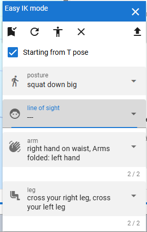
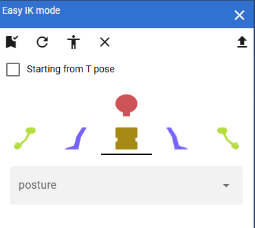

6.9. Repositioning of IK markers
6.9.1. Input mode

This function is used for VRoid/VRM. You can directly specify the position and rotation of the body parts of the model used in this application. A new window will open. It is a separate window from the app.
Input Mode .Top:
- Apply Pose:
Apply a pose with the values specified in the spreadsheet below.
- Reload:
Reload the current pose information.
- flip pose:
Flip the values of the current pose left to right
Bottom:
- Spreadsheet:
Specify the Position and Rotation values for each part of the body.
Note
You can directly move and rotate the VRoid/VRM while this window is displayed. However, due to specifications, it is not immediately reflected in the spreadsheet in this window. By pressing the reload button, you can get the position and rotation information immediately.
It is automatically reloaded when you change the object selection, or when you change the timeline keyframe selection.
If you choose anything other than VRM, the spreadsheet will not be available.
6.9.2. Easy IK mode
Introduced in ver 2.13.0. This is a function that is only available for VRoid/VRM, but you can easily make the character take various poses by simply selecting the movement you like from four different body parts. It is a separate window from the input mode.
PC to Phablet |
Smartphone |
|---|---|
 |
 |
- Toolbar
They are listed from left to right in the following order:
- Apply:
Apply the movement of the selected body part to achieve a new pose.
- Default sample data:
Reset the four body part movements to the app’s sample data, or load the latest data.
- Get current bone information:
Reacquire the bone information of the currently selected VRM and the bone information for the T-pose.
- Deselect:
Deselect everything in each combo box.
- Open:
If you have a CSV file of movement data that you created yourself, you can load it by pressing this button.
- Window Center
- Starting with the T-pose:
If checked, the bone information of the T-pose will be used as the initial value. If unchecked, the current bone information will be used.
- Each combo box
- posture:
It mainly moves the upper body and hips.
- line of sight:
Mainly the gaze and face direction are moved.
- Arm:
Move your arms and hands.
- leg:
Move your legs and feet.
Hint
For smartphones or devices with similar screen sizes, this will be a tab panel.